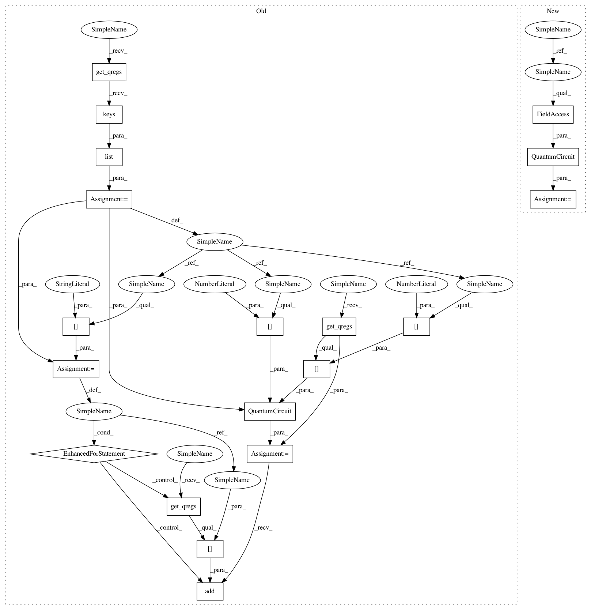

5b33c11615d534bb308f7267af023d19adf17d2d,qiskit_aqua/utils/circuit_factory.py,CircuitFactory,build_controlled_inverse,#CircuitFactory#Any#Any#Any#Any#Any#,90
Before Change
params : parameters for circuit
qreg_names = list(qc.get_qregs().keys())
qc_ = QuantumCircuit(qc.get_qregs()[qreg_names[0]], name=qreg_names[0])
for name in qreg_names[1:]:
qc_.add(qc.get_qregs()[name])
self.build_controlled(qc_, q, q_control, q_ancillas, params)
try:
qc_.data = [gate.inverse() for gate in reversed(qc_.data)]
except AquaError:
After Change
params : parameters for circuit
qc_ = QuantumCircuit(*qc.qregs)
self.build_controlled(qc_, q, q_control, q_ancillas, params)
try:
qc_.data = [gate.inverse() for gate in reversed(qc_.data)]
In pattern: SUPERPATTERN
Frequency: 3
Non-data size: 19
Instances
Project Name: Qiskit/qiskit-aqua
Commit Name: 5b33c11615d534bb308f7267af023d19adf17d2d
Time: 2018-11-27
Author: shaohan.hu@ibm.com
File Name: qiskit_aqua/utils/circuit_factory.py
Class Name: CircuitFactory
Method Name: build_controlled_inverse
Project Name: Qiskit/qiskit-aqua
Commit Name: 5b33c11615d534bb308f7267af023d19adf17d2d
Time: 2018-11-27
Author: shaohan.hu@ibm.com
File Name: qiskit_aqua/utils/circuit_factory.py
Class Name: CircuitFactory
Method Name: build_inverse
Project Name: Qiskit/qiskit-aqua
Commit Name: 5b33c11615d534bb308f7267af023d19adf17d2d
Time: 2018-11-27
Author: shaohan.hu@ibm.com
File Name: qiskit_aqua/utils/circuit_factory.py
Class Name: CircuitFactory
Method Name: build_controlled